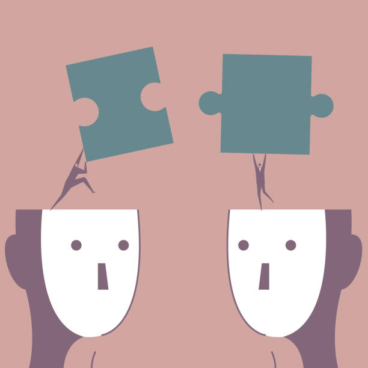

Navigating the Maze of Cognitive Bias: Harnessing Awareness for Better Decision-Making
In our everyday lives, we find ourselves making countless decisions, both big and small. It's fascinating to think about how our minds, much like a trusted friend, can sometimes lead us astray due to biases that cloud our judgment. It's as if our brains have their own quirks, their own little shortcuts that help us process information quickly. But here's the catch: these mental shortcuts, called heuristics, can sometimes introduce biases that sway our perception and decision-making. Trust me, I've been there too. That's why I'm excited to dive into the captivating realm of cognitive bias with you in this blog post.
Two people puzzle. On the face to face. Xiao Yun Li/ Getty Images
So, what exactly is cognitive bias? It's those systematic errors in our thinking and decision-making that deviate from rationality. Our brains, marvelous as they are, have their limitations. They rely on these mental shortcuts to keep up with the fast pace of life. But, as it turns out, these shortcuts can lead us astray. And that's why it's so crucial to understand cognitive bias. When we grasp the influence of biases on our thinking, it opens our eyes to the limitations we all face. Suddenly, we approach information and decision-making with a healthy dose of skepticism. We start recognizing biases not only within ourselves but in others too. It's like we're equipped with a superpower, fostering better communication and empathy.
Now, don't get me wrong. We can't completely eliminate cognitive biases from our lives. But we can take steps to mitigate their impact. Think of it as a dance, a delicate balance we strive to achieve. One strategy is to delve into the topic of cognitive biases, soak up knowledge from books, articles, and research. The more we learn, the better equipped we are to combat their influence. Another trick is to actively seek out opinions and feedback from people who come from different backgrounds and hold diverse viewpoints. It's like widening our lens, challenging our own biases, and embracing a broader understanding of complex issues.
Oh, and let's not forget the importance of verifying information from multiple credible sources. It's all too easy to fall prey to misleading or biased data. So, take a moment to fact-check, to ensure you're standing on solid ground. And while you're at it, why not develop your critical thinking skills? That way, you can confidently assess the reliability and accuracy of information that comes your way.
Sure, cognitive bias is deeply ingrained within our human cognition. But understanding its existence and influence gives us the power to enhance our decision-making abilities. It's about acknowledging our biases, seeking out diverse perspectives, and critically evaluating the information we encounter. Together, we can navigate the labyrinth of cognitive biases and make choices that are more informed, more thoughtful. Let's harness the power of awareness to become better decision-makers and foster a more rational and open-minded society. Trust me, the journey is worth it.
Exciting developments are underway for a captivating project closely tied to this very blog.